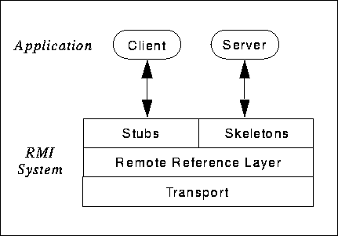

[TOC] [Prev] [Next]
System Architecture
Note:
The RMI documentation on this site is temporarily unavailable. Links to all RMI pages will be redirected shortly.
The RMI system consists of three layers: the stub/skeleton layer, the remote
reference layer, and the transport layer. The boundary at each layer is defined by
a specific interface and protocol; each layer, therefore, is independent of the
next and can be replaced by an alternate implementation without affecting the
other layers in the system. For example, the current transport implementation
is TCP-based (using Java sockets), but a transport based on UDP could be
substituted.
To accomplish transparent transmission of objects from one address space to
another, the technique of object serialization (designed specifically for the Java
language) is used. Object serialization is described in this chapter only with
regard to its use for marshaling primitives and objects. For complete details,
see the Object Serialization Specification.
Another technique, called dynamic stub loading, is used to support client-side
stubs which implement the same set of remote interfaces as a remote object
itself. This technique, used when a stub of the exact type is not already
available to the client, allows a client to use the Java language's built-in
operators for casting and type-checking.
The RMI system consists of three layers:
- The stub/skeleton layer - client-side stubs (proxies) and server-side
skeletons
- The remote reference layer - remote reference behavior (such as invocation
to a single object or to a replicated object)
- The transport layer - connection set up and management and remote object
tracking
The application layer sits on top of the RMI system. The relationship between
the layers is shown in the following figure.

A remote method invocation from a client to a remote server object travels
down through the layers of the RMI system to the client-side transport, then
up through the server-side transport to the server.
A client invoking a method on a remote server object actually makes use of a
stub or proxy for the remote object as a conduit to the remote object. A client-
held reference to a remote object is a reference to a local stub. This stub is an
implementation of the remote interfaces of the remote object and forwards
invocation requests to that server object via the remote reference layer. Stubs
are generated using the rmic compiler.
The remote reference layer is responsible for carrying out the semantics of the
invocation. For example, the remote reference layer is responsible for
determining whether the server is a single object or is a replicated object
requiring communications with multiple locations. Each remote object
implementation chooses its own remote reference semantics-whether the
server is a single object or is a replicated object requiring communications with
its replicas.
Also handled by the remote reference layer are the reference semantics for the
server. The remote reference layer, for example, abstracts the different ways of
referring to objects that are implemented in (a) servers that are always running
on some machine, and (b) servers that are run only when some method
invocation is made on them (activation). At the layers above the remote
reference layer, these differences are not seen.
The transport layer is responsible for connection setup, connection management,
and keeping track of and dispatching to remote objects (the targets of remote
calls) residing in the transport's address space.
In order to dispatch to a remote object, the transport forwards the remote call
up to the remote reference layer. The remote reference layer handles any
server-side behavior that needs to occur before handing off the request to the
server-side skeleton. The skeleton for a remote object makes an up call to the
remote object implementation which carries out the actual method call.
The return value of a call is sent back through the skeleton, remote reference
layer, and transport on the server side, and then up through the transport,
remote reference layer, and stub on the client side.
The stub/skeleton layer is the interface between the application layer and the
rest of the RMI system. This layer does not deal with specifics of any transport,
but transmits data to the remote reference layer via the abstraction of marshal
streams. Marshal streams employ a mechanism called object serialization which
enables Java objects to be transmitted between address spaces. Objects
transmitted using the object serialization system are passed by copy to the
remote address space, unless they are remote objects, in which case they are
passed by reference.
A stub for a remote object is the client-side proxy for the remote object. Such a
stub implements all the interfaces that are supported by the remote object
implementation. A client-side stub is responsible for:
- Initiating a call to the remote object (by calling the remote reference layer).
- Marshaling arguments to a marshal stream (obtained from the remote
reference layer).
- Informing the remote reference layer that the call should be invoked.
- Unmarshaling the return value or exception from a marshal stream.
- Informing the remote reference layer that the call is complete.
A skeleton for a remote object is a server-side entity that contains a method
which dispatches calls to the actual remote object implementation. The
skeleton is responsible for:
- Unmarshaling arguments from the marshal stream.
- Making the up-call to the actual remote object implementation.
- Marshaling the return value of the call or an exception (if one occurred) onto
the marshal stream.
The appropriate stub and skeleton classes are determined at run time and are
dynamically loaded as needed, as described in Dynamic Class
Loading. Stubs and skeletons are generated using the rmic compiler.
The remote reference layer deals with the lower-level transport interface. This
layer is also responsible for carrying out a specific remote reference protocol
which is independent of the client stubs and server skeletons.
Each remote object implementation chooses its own remote reference subclass
that operates on its behalf. Various invocation protocols can be carried out at
this layer. Examples are:
- Unicast point-to-point invocation.
- Invocation to replicated object groups.
- Support for a specific replication strategy.
- Support for a persistent reference to the remote object (enabling activation
of the remote object).
- Reconnection strategies (if remote object becomes inaccessible).
The remote reference layer has two cooperating components: the client-side
and the server-side components. The client-side component contains
information specific to the remote server (or servers, if the remote reference is
to a replicated object) and communicates via the transport to the server-side
component. During each method invocation, the client and server-side
components perform the specific remote reference semantics. For example, if a
remote object is part of a replicated object, the client-side component can
forward the invocation to each replica rather than just a single remote object.
In a corresponding manner, the server-side component implements the specific
remote reference semantics prior to delivering a remote method invocation to
the skeleton. This component, for example, would handle ensuring atomic
multicast delivery by communicating with other servers in a replica group
(note that multicast delivery is not part of the JDK 1.1 release of RMI).
The remote reference layer transmits data to the transport layer via the
abstraction of a stream-oriented connection. The transport takes care of the
implementation details of connections. Although connections present a
streams-based interface, a connectionless transport can be implemented
beneath the abstraction.
In general, the transport layer of the RMI system is responsible for:
- Setting up connections to remote address spaces.
- Managing connections.
- Monitoring connection "liveness."
- Listening for incoming calls.
- Maintaining a table of remote objects that reside in the address space.
- Setting up a connection for an incoming call.
- Locating the dispatcher for the target of the remote call and passing the
connection to this dispatcher.
The concrete representation of a remote object reference consists of an endpoint
and an object identifier. This representation is called a live reference. Given a
live reference for a remote object, a transport can use the endpoint to set up a
connection to the address space in which the remote object resides. On the
server side, the transport uses the object identifier to look up the target of the
remote call.
The transport for the RMI system consists of four basic abstractions:
- An endpoint is the abstraction used to denote an address space or Java
virtual machine. In the implementation, an endpoint can be mapped to its
transport. That is, given an endpoint, a specific transport instance can be
obtained.
- A channel is the abstraction for a conduit between two address spaces. As
such, it is responsible for managing connections between the local address
space and the remote address space for which it is a channel.
- A connection is the abstraction for transferring data (performing
input/output).
- The transport abstraction manages channels. Each channel is a virtual
connection between two address spaces. Within a transport, only one
channel exists per pair of address spaces (the local address space and a
remote address space). Given an endpoint to a remote address space, a
transport sets up a channel to that address space. The transport abstraction
is also responsible for accepting calls on incoming connections to the
address space, setting up a connection object for the call, and dispatching to
higher layers in the system.
A transport defines what the concrete representation of an endpoint is, so
multiple transport implementations may exist. The design and implementation
also supports multiple transports per address space, so both TCP and UDP can
be supported in the same virtual machine. Note that the RMI transport
interfaces are only available to the virtual machine implementation and are not
available directly to the application.
A method dispatched by the RMI runtime to a remote object implementation (a
server) may or may not execute in a separate thread. Some calls originating
from the same client virtual machine will execute in the same thread; some will
execute in different threads. Calls originating from different client virtual
machines will execute in different threads. Other than this last case of different
client virtual machines, the RMI runtime makes no guarantees with respect to
mapping remote object invocations to threads.
In a distributed system, just as in the local system, it is desirable to
automatically delete those remote objects that are no longer referenced by any
client. This frees the programmer from needing to keep track of the remote
objects clients so that it can terminate appropriately. RMI uses a reference-
counting garbage collection algorithm similar to Modula-3's Network Objects.
(See "Network Objects" by Birrell, Nelson, and Owicki, Digital Equipment
Corporation Systems Research Center Technical Report 115, 1994.)
To accomplish reference-counting garbage collection, the RMI runtime keeps
track of all live references within each Java virtual machine. When a live
reference enters a Java virtual machine, its reference count is incremented. The
first reference to an object sends a "referenced" message to the server for the
object. As live references are found to be unreferenced in the local virtual
machine, their finalization decrements the count. When the last reference has
been discarded, an unreferenced message is sent to the server. Many subtleties
exist in the protocol; most of these are related to maintaining the ordering of
referenced and unreferenced messages in order to ensure that the object is not
prematurely collected.
When a remote object is not referenced by any client, the RMI runtime refers to
it using a weak reference. The weak reference allows the Java virtual machine's
garbage collector to discard the object if no other local references to the object
exist. The distributed garbage collection algorithm interacts with the local Java
virtual machine's garbage collector in the usual ways by holding normal or
weak references to objects. As in the normal object life-cycle finalize will be
called after the garbage collector determines that no more references to the
object exist.
As long as a local reference to a remote object exists, it cannot be garbage-
collected and it can be passed in remote calls or returned to clients. Passing a
remote object adds the identifier for the virtual machine to which it was passed
to the referenced set. A remote object needing unreferenced notification must
implement the java.rmi.server.Unreferenced interface. When those
references no longer exist, the unreferenced method will be invoked.
unreferenced is called when the set of references is found to be empty so it
might be called more than once. Remote objects are only collected when no
more references, either local or remote, still exist.
Note that if a network partition exists between a client and a remote server
object, it is possible that premature collection of the remote object will occur
(since the transport might believe that the client crashed). Because of the
possibility of premature collection, remote references cannot guarantee
referential integrity; in other words, it is always possible that a remote
reference may in fact not refer to an existing object. An attempt to use such a
reference will generate a RemoteException which must be handled by the
application.
In RPC (remote procedure call) systems, client-side stub code must be
generated and linked into a client before a remote procedure call can be done.
This code can be either statically linked into the client or linked in at runtime
via dynamic linking with libraries available locally or over a network file
system. In the case of either static or dynamic linking, the specific code to
handle an RPC must be available to the client machine in compiled form.
RMI generalizes this technique, using a mechanism called dynamic class
loading to load at runtime (in the Java language's architecture neutral bytecode
format) the classes required to handle method invocations on a remote object.
These classes are:
- The classes of remote objects and their interfaces.
- The stub and skeleton classes that serve as proxies for remote objects. (Stubs
and skeletons are created using the
rmic compiler.)
- Other classes used directly in an RMI-based application, such as parameters
to, or return values from, remote method invocations.
This section describes:
- How the RMI runtime chooses a class loader and the location from which to
load classes.
- How to force the downloading over the net of all the classes for a Java
application.
In addition to class loaders, dynamic class loading employs two other
mechanisms: the object serialization system to transmit classes over the wire,
and a security manager to check the classes that are loaded. The object
serialization system is discussed in the Object Serialization Specification. Security
issues are discussed in Security.
In Java, the class loader that initially loads a Java class is subsequently used to
load all the interfaces and classes that are used directly in the class:
- The AppletClassLoader is used to download a Java applet over the net from
the location specified by the codebase attribute on the web page that
contains the <applet> tag. All classes used directly in the applet are
subsequently loaded by the AppletClassLoader.
- The default class loader is used to load a class (whose
main method is run
by using the java command) from the local CLASSPATH. All classes used
directly in that class are subsequently loaded by the default class loader
from the local CLASSPATH.
- The RMIClassLoader is used to load those classes not directly used by the
client or server application: the stubs and skeletons of remote objects, and
extended classes of arguments and return values to RMI calls. The
RMIClassLoader looks for these classes in the following locations, in the
order listed:
- The local CLASSPATH. Classes are always loaded locally if they exist
locally.
- For objects (both remote and nonremote) passed as parameters or return
values, the URL encoded in the marshal stream that contains the
serialized object is used to locate the class for the object.
- For stubs and skeletons of remote objects created in the local virtual
machine, the URL specified by the local
java.rmi.server.codebase
property is used.
For objects passed as parameters or return values (the second case above), the
URL that is encoded in the stream for an object's class is determined as
follows:
- If the class was loaded by a class loader (other than the default classloader),
the URL of that class loader is used.
- otherwise, if defined, the
java.rmi.server.codebase URL is used.
Thus, if a class was loaded from CLASSPATH, the codebase URL will be used
to annotate that class in the stream if that class is used in an RMI call.
The application can be configured with the property
java.rmi.server.useCodebaseOnly, which disables the loading of classes
from network hosts and forces classes to be loaded only from the locally
defined codebase. If the required class cannot be loaded, the method
invocation will fail with an exception.
For the RMI runtime to be able to download all the classes and interfaces
needed by a client application, a bootstrapping client program is required
which forces the use of a class loader (such as RMI's class loader) instead of the
default class loader. The bootstrapping program needs to:
- Create an instance of the
RMISecurityManager or user-defined security
manager.
- Use the method
RMIClassLoader.loadClass to load the class file for the
client. The class name cannot be mentioned explicitly in the code, but must
instead be a string or a command line argument. Otherwise, the default
class loader will try to load the client class file from the local CLASSPATH.
- Use the
newInstance method to create an instance of the client and cast it
to Runnable. Thus, the client must implement the java.lang.Runnable
interface. The Runnable interface provides a well-defined interface for
starting a thread of execution.
- Start the client by calling the
run method (of the Runnable interface).
For example:
import java.rmi.RMISecurityManager;
import java.rmi.server.RMIClassLoader;
public class LoadClient
{
public static void main()
{
System.setSecurityManager(new RMISecurityManager());
try {
Class cl = RMIClassLoader.loadClass("myclient");
Runnable client = (Runnable)cl.newInstance();
client.run();
} catch (Exception e) {
System.out.println("Exception: " + e.getMessage());
e.printStackTrace();
}
}
}
In order for this code to work, you need to specify the java.rmi.server.codebase
property when you run the bootstrapping program so that the loadClass
method will use this URL to load the class. For example:
java -Djava.rmi.server.codebase=http://host/rmiclasses/ LoadClient
Instead of relying on the property, you can supply your own URL:
Class cl = RMIClassLoader.loadClass(url, "myclient");
Once the client is started and has control, all classes needed by the client will
be loaded from the specified URL. This bootstrapping technique is exactly the
same technique Java uses to force the AppletClassLoader to download the
same classes used in an applet.
Without this bootstrapping technique, all the classes directly referenced in the
client code must be available through the local CLASSPATH on the client, and
the only Java classes that can be loaded by the RMIClassLoader over the net
are classes that are not referred to directly in the client program; these classes
are stubs, skeletons, and the extended classes of arguments and return values
to remote method invocations.
In Java, when a class loader loads classes from the local CLASSPATH, those
classes are considered trustworthy and are not restricted by a security
manager. However, when the RMIClassLoader attempts to load classes from
the network, there must be a security manager in place or an exception is
thrown.
The security manger must be started as the first action of a Java program so
that it can regulate subsequent actions. The security manager ensures that
loaded classes adhere to the standard Java safety guarantees, for example that
classes are loaded from "trusted" sources (such as the applet host) and do not
attempt to access sensitive functions. A complete description of the restrictions
imposed by security managers can be found in the documentation for the
AppletSecurity class and the RMISecurityManager class.
Applets are always subject to the restrictions imposed by the
AppletSecurity class. This security manager ensures that classes are loaded
only from the applet host or its designated codebase hosts. This requires that
applet developers install the appropriate classes on the applet host.
Applications must either define their own security manager or use the
restrictive RMISecurityManager. If no security manager is in place, an
application cannot load classes from network sources.
A client or server program is usually implemented by classes loaded from the
local system and therefore is not subject to the restrictions of the security
manager. If however, the client program itself is downloaded from the network
using the technique described in Bootstrapping the Client, then
the client program is subject to the restrictions of the security manager.
Once a class is loaded by the RMIClassLoader, any classes used directly
by that class are also loaded by the RMIClassLoader and thus are subject to the
security manager restrictions.
Even if a security manager is in place, setting the property
java.rmi.server.useCodebaseOnly to true prevents the downloading of
a class from the URL embedded in the stream with a serialized object (classes
can still be loaded from the locally-defined java.rmi.server.codebase).
The java.rmi.server.useCodebaseOnly property can be specified on
both the client and the server, but is not applicable for applets.
If an application defines its own security manager which disallows the creation
of a class loader, classes will be loaded using the default Class.forName
mechanism. Thus, a server may define its own policies via the security
manager and class loader, and the RMI system will operate within those
policies.
The java.lang.SecurityManager abstract class, from which all
security managers are extended, does not regulate resource consumption.
Therefore, the current RMISecurityManager has no mechanisms available to
prevent classes loaded from abusing resources. As new security manager
mechanisms are developed, RMI will use them.
The RMI system supports many different scenarios. Servers can be configured
in an open or closed fashion. Applets can use RMI to invoke methods on
objects supported on servers. If an applet creates and passes a remote object to
the server, the server can use RMI to make a callback to the remote object. Java
applications can use RMI either in client-server mode or from peer to peer. This
section highlights the issues surrounding these configurations.
The typical closed-system scenario has the server configured to load no classes.
The services it provides are defined by remote interfaces that are all local to the
server machine. The server has no security manager and will not load classes
even if clients send along the URL. If clients send remote objects for which the
server does not have stub classes, those method invocations will fail when the
request is unmarshaled, and the client will receive an exception.
The more open server system will define its java.rmi.server.codebase so
that classes for the remote objects it exports can be loaded by clients, and so
that the server can load classes when needed for remote objects supplied by
clients. The server will have both a security manager and RMI class loader
which protect the server. A somewhat more cautious server can use the
property java.rmi.server.useCodebaseOnly to disable the loading of
classes from client-supplied URLs.
Typically, the classes needed will be supplied by an HTTP server or by an FTP
server as referenced in URL's embedded in the HTML page containing the
applet. The RMI-based service(s) used by the applet must be on the server
from which the applet was downloaded, because an applet can only make
network connections to the host from which it was loaded.
For example, the normal applet scenario uses a single host for the HTTP server
providing the HTML page, the applet code, the RMI services, and the
bootstrap Registry. In this scenario, all the stub, skeleton, and supporting
classes are loaded from the HTTP server. All of the remote objects provided by
the RMI service and passed to the applet (which may pass them back to the
server) will be for classes that the RMI service already knows about. In this
case, the RMI service is very secure because it loads no classes from the
network.
Applications written in the Java language, unlike applets, can connect to any
host; so Java applications have more options for configuring the sources of
classes and where RMI based services run. Typically, a single HTTP server will
be used to supply remote classes, while the RMI-based applications themselves
are distributed around the network on servers or running on user's desktops
If an application is loaded locally, then the classes used directly in that
program must also be available locally. In this scenario, the only classes that
can be downloaded from a network source are the classes of remote interfaces,
stub classes, and the extended classes of arguments and return values to
remote method invocations.
If an application is not loaded from a local directory, but is loaded from a
network source using the bootstrapping mechanism described in Bootstrapping the Client, then all classes used by the application can be
downloaded from the same network source.
To enable downloading from a network source, each remote object server must
be configured with the java.rmi.server.codebase property which
specifies where application classes and generated stubs/skeletons reside.
When the codebase property is specified, the RMI system embeds the URL of a
class in the serialized form of the class.
Even if a serialized object's class is annotated with the URL from which the
class can be downloaded, a client or peer will still load classes locally if they
are available.
The RMI transport layer normally attempts to open direct sockets to hosts on
the Internet. Many intranets, however, have firewalls which do not allow this.
The default RMI transport, therefore, provides two alternate HTTP-based
mechanisms which enable a client behind a firewall to invoke a method on a
remote object which resides outside the firewall.
To get outside a firewall, the transport layer embeds an RMI call within the
firewall-trusted HTTP protocol. The RMI call data is sent outside as the body
of an HTTP POST request, and the return information is sent back in the body
of the HTTP response. The transport layer will formulate the POST request in
one of two ways:
- If the firewall proxy will forward an HTTP request directed to an arbitrary
port on the host machine, then it is forwarded directly to the port on which
the RMI server is listening. The default RMI transport layer on the target
machine is listening with a server socket that is capable of understanding
and decoding RMI calls inside POST requests.
- If the firewall proxy will only forward HTTP requests directed to certain
well-known HTTP ports, then the call will be forwarded to the HTTP server
listening on port 80 of the host machine, and a CGI script will be executed to
forward the call to the target RMI server port on the same machine.
The RMI transport extends the java.rmi.server.RMISocketFactory class
to provide a default implementation of a socket factory which is the resource-
provider for client and server sockets. This default socket factory creates
sockets that transparently provide the firewall tunnelling mechanism as
follows:
- Client sockets automatically attempt HTTP connections to hosts that cannot
be contacted with a direct socket.
- Server sockets automatically detect if a newly-accepted connection is an
HTTP POST request, and if so, return a socket that will expose only the
body of the request to the transport and format its output as an HTTP
response.
Client-side sockets, with this default behavior, are provided by the factory's
java.rmi.server.RMISocketFactory.createSocket method. Server-
side sockets with this default behavior are provided by the factory's
java.rmi.server.RMISocketFactory.createServerSocket method.
There is no special configuration necessary to enable the client to send RMI
calls through a firewall.
The client can, however, disable the packaging of RMI calls as HTTP requests
by setting the java.rmi.server.disableHttp property to equal the
boolean value true.
The host name should not be specified as the host's IP address, because
some firewall proxies will not forward to such a host name.
- In order for a client outside the server host's domain to be able to invoke
methods on a server's remote objects, the client must be able to find the
server. To do this, the remote references that the server exports must contain
the fully-qualified name of the server host.
Depending on the server's platform and network environment, this
information may or may not be available to the Java virtual machine on
which the server is running. If it is not available, the host's fully qualified
name must be specified with the property
java.rmi.server.hostname
when starting the server.
For example, use this command to start the RMI server class ServerImpl
on the machine chatsubo.javasoft.com:
java -Djava.rmi.server.hostname=chatsubo.javasoft.com ServerImpl
- If the server will not support RMI clients behind firewalls that can forward
to arbitrary ports, use this configuration:
- An HTTP server is listening on port 80.
- A CGI script is located at the aliased URL path
/cgi-bin/java-rmi.
This script:
Calls transmitted via HTTP requests are at least an order of magnitude slower
that those sent through direct sockets, without taking proxy forwarding delays
into consideration.
Because HTTP requests can only be initiated in one direction through a
firewall, a client cannot export its own remote objects outside the firewall,
because a host outside the firewall cannot initiate a method invocation back on
the client.
[TOC] [Prev] [Next]
Copyright © 1996, 1997 Sun Microsystems, Inc. All rights
reserved.